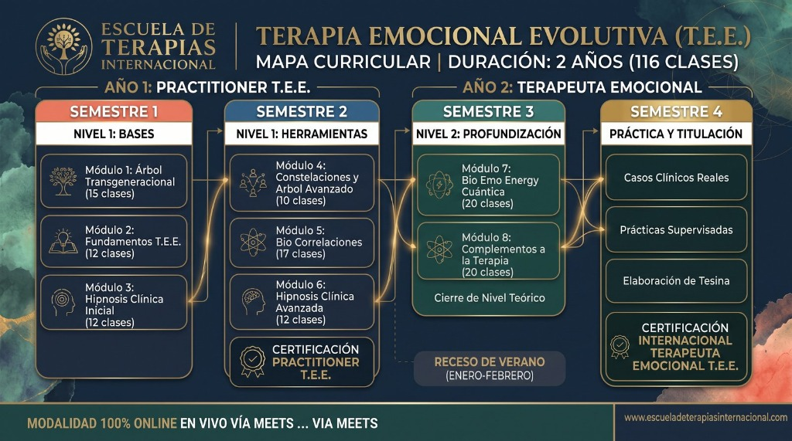

Programa Oficial de Formación Profesional 2027-2028
Descodificando el Camino hacia la Sanación
Una Nueva Realidad Terapéutica
Reunir hoy una terapia que una los nuevos descubrimientos de la plasticidad cerebral y la física cuántica, con herramientas terapéuticas profundas y la fuerza de tus orígenes familiares, suele ser una complejidad. La Terapia Emocional Evolutiva (T.E.E.) nace como una respuesta integral a esta necesidad.
Esta formación profesional de 2 años está diseñada para sumergir al alumno en un proceso experiencial profundo. No solo aprenderás a tratar a otros, sino que iniciarás sanando tu propia historia. La T.E.E. se fundamenta en tres pilares potentes: la comprensión del Árbol Transgeneracional, las BioCorrelaciones (la relación indisociable entre psique, cerebro y órgano), y la Hipnosis Clínica.
Perfil del Estudiante y Requisitos de Ingreso
Este programa de alta exigencia emocional y académica está dirigido a:
- Toda persona mayor de 18 años con un deseo profundo de resolver su historia familiar o conflictos personales.
- Profesionales de la salud, terapeutas holísticos, o cualquier individuo que sienta el llamado a formarse profesionalmente para ayudar a otros.
- Requisito fundamental: Disposición para el trabajo personal. El programa exige que el alumno desarrolle su propio genograma y trabaje en su propia historia para poder resolver la de futuros consultantes.
- Sin conocimientos previos: No se exigen conocimientos previos en psicología o biología, el programa cubre desde las bases hasta el nivel avanzado.
Estructura General del Programa
El programa se extiende a lo largo de 4 semestres (2 años académicos), comprendiendo un total de 116 clases estructuradas. Está dividido en dos grandes certificaciones progresivas que otorgan al estudiante logros tangibles y herramientas prácticas desde el primer año:
AÑO 1: Certificación Practitioner T.E.E.
Enfocado en las bases teóricas, la construcción del árbol genealógico y la adquisición de herramientas complementarias de aplicación inmediata.
AÑO 2: Terapeuta Emocional Avanzado
Dedicado a la profundización en la biología (Las 5 Leyes), la cuántica, y un semestre íntegro de prácticas clínicas reales y tesina de grado.
Malla Curricular: Mapa Visual del Programa
A continuación se presenta la infografía oficial con la distribución modular completa de los 4 semestres de cursada:

Malla Curricular Oficial · Duración: 2 Años (116 Clases)
Modalidad 100% Online en Vivo vía Google Meet
Malla Curricular: Año 1 (Nivel Practitioner)
Durante el primer año, el objetivo es asimilar las bases del esquema terapéutico, dominar la psicogenealogía e incorporar herramientas de intervención complementarias.
Semestre 1
15 Clases | Teórico-Práctico
- Construcción del genograma personal.
- Identificación de lealtades invisibles y secretos.
- El doble por fechas, nombre y características.
- Proyecto sentido y etapas del nacimiento.
Semestre 1
12 Clases | Teórico
- Conceptos generales y bio-emociones.
- La biología de la creencia (Bruce Lipton).
- Identificación del conflicto desencadenante.
- Elaboración de pauta de entrevista inicial.
Semestre 1
12 Clases | Teórico-Práctico
- ¿Qué es y qué no es la hipnosis? Mitos.
- Lenguaje del inconsciente e inducción.
- Recursos de profundización del trance.
- Regresiones a la niñez y vidas pasadas.
Semestre 2
10 Clases | Avanzado
- Importancia del Padre y la Madre (Edipo/Electra).
- Reconocer a los ancestros y parejas anteriores.
- El impacto transgeneracional de los abortos.
- Actos psicomágicos de reparación.
Semestre 2
20 Clases | Herramientas Prácticas
- Ft Taping y liberación de emociones atrapadas.
- Terapia Floral y de Plantas.
- Masaje emocional y Cuerpo BioEnergy A.L.
- Setting terapéutico y ética en consulta.
Semestre 2
10 Clases | Avanzado
- Estados profundos de la hipnosis.
- Enfoque de Milton Erickson y metáforas.
- Programación e instalación de recursos.
- Reprogramación de traumas arraigados.
Hito Académico: Al aprobar estos 6 módulos, el alumno obtiene la Certificación T.E.E. Practitioner, validando su capacidad para realizar atenciones preliminares y aplicar herramientas complementarias.
Malla Curricular: Año 2 (Terapeuta Emocional)
El segundo año eleva la formación integrando la biología médica germánica (Leyes de Hamer), la física cuántica, y un riguroso semestre de práctica clínica supervisada.
Semestre 3
20 Clases | Teórico-Práctico
- Epigenética y el Doble Cuántico (JPG).
- Universo holográfico y sincronicidad.
- Alba Emoting y Bioenergética (A. Lowen).
- Tratamiento Aplicado: La Línea de la Vida.
Semestre 3
17 Clases | Especialización Biológica
- La tríada indisociable: Psique - Cerebro - Órgano.
- Las 5 Leyes Biológicas del Dr. Hamer.
- Capas embrionarias y anatomía general.
- Análisis de casos: Conflictos de territorio, desvalorización y supervivencia.
Semestre 4
Prácticas Clínicas Supervisadas y Tesina
5 Meses | 100% Práctico (Sin clases teóricas)
El último semestre está liberado de carga teórica. Los alumnos se dedican exclusivamente a la atención de consultantes reales bajo estricta supervisión de los docentes. Finaliza con la elaboración y defensa de una Tesina de grado, requisito indispensable para la titulación de Terapeuta Emocional Evolutivo Avanzado.
Metodología de Estudio
1Clases Sincrónicas en Vivo
Dos sesiones semanales (ej. Lunes y Jueves) de 2 horas cada una a través de Google Meet / Zoom. Fomenta el aprendizaje espaciado sin saturación cognitiva.
2Plataforma y Respaldo Asincrónico
Todas las clases quedan grabadas semanalmente. Acceso 24/7 a presentaciones, material de lectura y foros de participación continua.
3Ayudantías y Seguimiento
Se destinan clases especiales exclusivas para el seguimiento de casos clínicos, resolución de dudas, revisión de tareas y apoyo continuo del alumno.
4Desarrollo del Propio Proceso
Estructura experiencial. Es requisito fundamental sumergirte en tu propio proceso terapéutico, trabajando tu historia personal y genograma.
Proyección Profesional
La Terapia Emocional es una de las disciplinas más demandadas y respetadas en el ámbito de la salud integrativa actual. Al titularte, estarás capacitado para trabajar de forma independiente en consulta privada (online o presencial) o integrarte a centros médicos y holísticos multidisciplinarios.
Preguntas Frecuentes
¿En el curso puedo exponer mi propio caso para obtener soluciones?
Absolutamente. El programa es experiencial. Verás constantemente la posibilidad de trabajar tu caso, ya sea en grupo o individualmente. De hecho, es un requisito ético y académico sanar tu propia historia familiar para poder guiar a otros en su proceso de sanación.
¿Qué pasa si por fuerza mayor no puedo seguir el programa continuo?
La escuela ofrece flexibilidad. Puedes congelar tus estudios hasta por dos años consecutivos y retomar donde lo dejaste sin penalización. Además, las certificaciones intermedias (Practitioner) respaldan tu avance parcial.
¿Cuáles son las modalidades de inscripción y pago?
Ofrecemos matrícula y facilidades directas con la escuela a través de mensualidades (sin necesidad de tarjetas de crédito para alumnos locales), así como plataformas de pago seguro internacional para alumnos de otros países.
¿Tengo alguna garantía al inscribirme?
Sí, la Escuela de Terapias Internacional otorga una garantía de satisfacción total durante los primeros días del curso. Si sientes que el enfoque del programa no resuena contigo, se procesa el reembolso completo de tu mensualidad.
Mapa Curricular de la Formación
Malla Curricular Visual T.E.E. — Esquema global de formación profesional:
Malla Curricular Oficial · 116 Clases · 4 Semestres
Escuela de Terapias Internacional